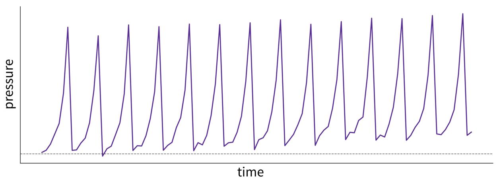
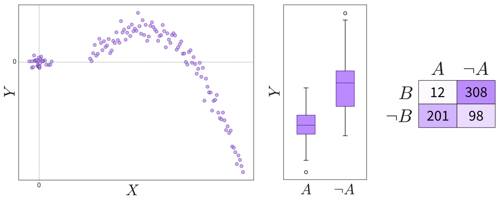
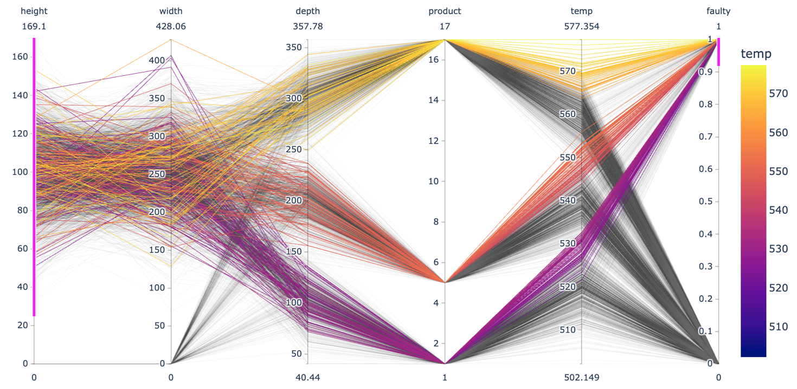
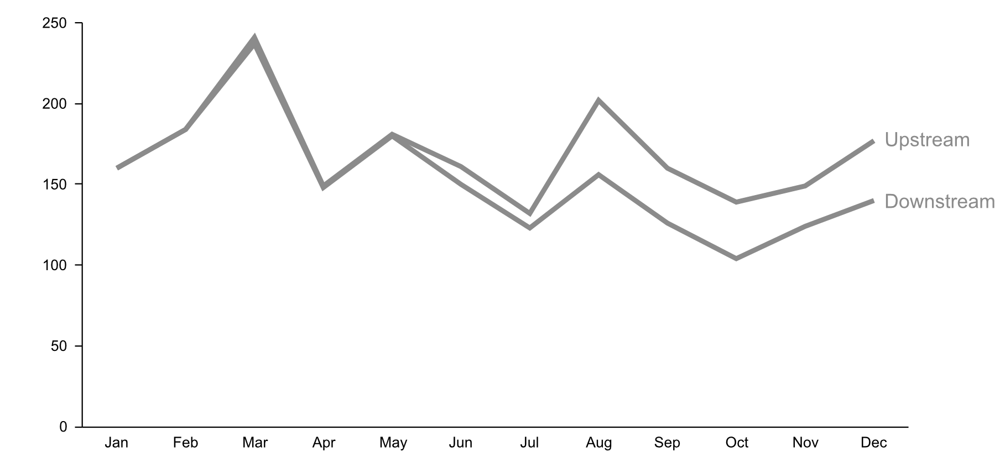
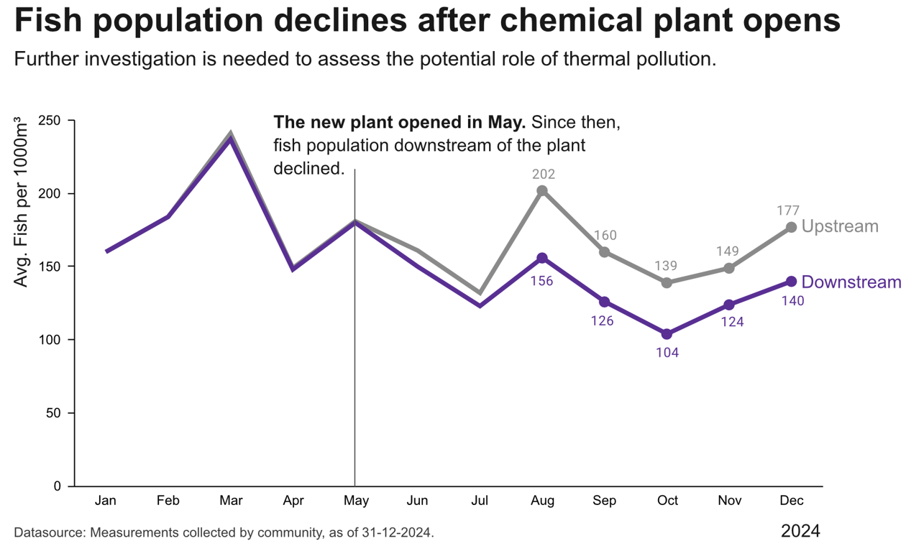

2 Data & Results
In the previous chapter, we’ve gained clarity on the problem you’re trying to solve and how to quantify the improvements your research generates. Now it’s time to dive deeper into what these results might actually look like and the data on which they are built.
Data Types
In one form or another, you’re research will rely on data, both collected or generated by yourself and possibly others.
Structured vs. Unstructured Data
Data can take many forms, but one key distinction is between structured and unstructured data (Figure 2.1).

Structured data is organized in rows and columns, like in Excel spreadsheets, CSV files, or relational databases. Each row represents a sample or observation (a data point), while each column corresponds to a variable or measurement (e.g., temperature, pressure, household income, number of children).
Unstructured data, in contrast, lacks a predefined structure. Examples include images, text, audio recordings, and videos, typically stored as separate files on a computer or in the cloud. While these files might include structured metadata (e.g., timestamps, camera settings), the data content itself can vary widely—for instance, audio recordings can range from seconds to hours in length.
Structured data is often heterogeneous, meaning it includes variables representing different kinds of information with distinct units or scales (e.g., temperature in °C and pressure in kPa). Unstructured data tends to be homogeneous; for example, there’s no inherent difference between one pixel and the next in an image.
Even though unstructured data is common in science (e.g., microscopy images), for simplicity, this book focuses on structured data. Furthermore, for now we’ll assume that your data is stored in an Excel or CSV file, i.e., a spreadsheet with rows (samples) and columns (variables), on your computer. Later in Chapter 6, we’ll discuss more advanced options for storing and accessing data, such as databases and APIs.
Programming Data Types
Each variable in your dataset (i.e., each column in your spreadsheet) is represented as a specific data type, such as:
- Numbers (integers for whole numbers or floats for decimals)
- Strings (text)
- Boolean values (true/false)
In programming, these are so-called primitive data types (as opposed to composite types, like arrays or dictionaries containing multiple values, or user-defined objects) and define how information is stored in computer memory.
# integer
i = 42
# float
x = 4.1083
# string
s = "hello world!"
# boolean
b = FalseStatistical Data Types
Even more important than how your data is stored, is understanding what your data means. Variables fall into two main categories:
- Continuous (numerical) variables represent measurable values (e.g., temperature, height). These are usually stored as floats or integers.
- Discrete (categorical) variables represent distinct options or groups (e.g., nationality, product type). These are often stored as strings, booleans, or sometimes integers.
Be cautious: a variable that looks numerical (e.g., 1, 2, 3) may actually represent categories. For example, a material_type column with values 1, 2, and 3 might correspond to aluminum, copper, and steel, respectively. In this case, the numbers are IDs, not quantities.
Recognizing whether a variable is continuous or discrete is crucial for creating meaningful visualizations and using appropriate statistical models.
Time Series Data
Another consideration is whether your data points are linked by time. Time series data often refers to numerical data collected over time, like temperature readings or sales numbers. These datasets are usually expected to exhibit seasonal patterns or trends over time.
However, nearly all datasets involve some element of time. For example, if your dataset consists of photos, timestamps might seem unimportant, but they could reveal trends—like changes in image quality due to new equipment.
Always include timestamps in your data or metadata to help identify potential correlations or unexpected trends over time.
Sometimes, you may be able to collect truly time-independent data (e.g., sending a survey to 1,000 people simultaneously and they all answer within the next 10 minutes). But usually, your data collection will take longer and external factors—like an election during a longer survey period—might unintentionally affect your results. By tracking time, you can assess and adjust for such influences.
Data Analysis Results
When analyzing data, the process is typically divided into two phases:
- Exploratory Analysis: This involves generating a variety of plots to gain a deeper understanding of your data, such as identifying correlations between variables. It’s often a quick and dirty process to help you familiarize yourself with the dataset.
- Explanatory Analysis: This focuses on creating refined, polished plots intended for communicating your findings, such as in a publication or presentation. These visuals are designed to clearly convey your results to an audience that may not be familiar with your data.
Exploratory Analysis
In this initial analysis, the goal is to get acquainted with the data, check if the trends and relationships you anticipated are present, and uncover any unexpected patterns or insights.
Examine the raw data:
- Is the dataset complete, i.e., does it contain all the variables and samples you expected?
Examine summary statistics (e.g., mean, standard deviation (std), min/max values, missing value count, etc.):
- What does each variable mean? Given your understanding of the variable, are its values in a reasonable range?
- Are missing values encoded as NaN (Not a Number) or as ‘unrealistic’ numeric values (e.g., -1 while normal values are between 0 and 100)?
- Are missing values random or systematic (e.g., in a survey rich people are less likely to answer questions about their income or specific measurements are only collected under certain conditions)? This can influence how missing values should be handled, e.g., whether it makes sense to impute them with the mean or some other specific value (e.g., zero).
Examine the distributions of individual (continuous) variables:

Histogram, strip plot, violin plot, box plot, and summary statistics of the same values. - Are there any outliers? Are these genuine edge cases or can they be ignored (e.g., due to measurement errors or wrongly encoded data)?
- Is the data normally distributed or does the plot show multiple peaks? Is this expected?
Examine trends over time (by plotting variables over time, even if you don’t think your data has a meaningful time component, e.g., by lining up representative images according to their timestamps to see if there is a pattern):

What caused these trends and what are their implications for the future? This plot shows fictitious data of the pressure in a pipe affected by fouling—that is, a buildup of unwanted material on the pipe’s surface, leading to increased pressure. The pipe is cleaned at regular intervals, causing a drop in pressure. However, because the cleaning process is imperfect, the baseline pressure gradually shifts upward over time. - Are there time periods where the data was sampled irregularly or samples are missing? Why?
- Are there any (gradual or sudden) data drifts over time? Are these genuine changes (e.g., due to changes in the raw materials used in the process) or artifacts (e.g., due to a malfunctioning sensor recording wrong values)?
Examine relationships between two variables:

Depending on the variables’ types (continuous or discrete), relationships can be shown in scatter plots, box plots, or a table. Please note that not all interesting relations between the two variables can be detected through a high correlation coefficient, so you should always check the scatter plot for details. - Are the observed correlations between variables expected?
Examine patterns in multidimensional data (using a parallel coordinate plot):

Each line in a parallel coordinate plot represents one data point, with the corresponding values for the different variables marked at the respective y-axis. The screenshot here shows an interactive plot created using the Python plotlylibrary. By selecting value ranges for the different dimensions (indicated by the pink stripes), it is possible to spot interesting patterns resulting from a combination of values across multiple variables.- Do the observed patterns in the data match your understanding of the problem and dataset?
Explanatory Analysis
Most of the plots you create during an exploratory analysis are likely for your eyes only. Any plots you do choose to share with a broader audience—such as in a paper or presentation—should be refined to clearly communicate your findings. Since your audience is much less familiar with the data and likely lacks the time or interest to explore it in depth, it’s essential to make your results more accessible. This process is often referred to as explanatory analysis [1].
Don’t “just show all the data” and hope that your audience will make something of it—understand what they need to answer the questions they have.
Step 1: Choose the right plot type
- Get inspired by visualization libraries (e.g., here or here), but avoid the urge to create fancy graphics; sticking with common visualizations makes it easier for the audience to correctly decode the presented information.
- Don’t use 3D effects!
- Avoid pie or donut charts (angles are hard to interpret).
- Use line plots for time series data.
- Use horizontal instead of vertical bar charts for audiences that read left to right.
- Start the y-axis at 0 for area & bar charts.
- Consider using small multiples or sparklines instead of cramming too much into a single chart.

Step 2: Cut clutter / maximize data-to-ink ratio
- Remove border.
- Remove gridlines.
- Remove data markers.
- Clean up axis labels.
- Label data directly.

Step 3: Focus attention
- Start with gray, i.e., push everything in the background.
- Use pre-attentive attributes like color strategically to highlight what’s most important.
- Use data labels sparingly.

Step 4: Make data accessible
- Add context: Which values are good (goal state), which are bad (alert threshold)? Should the value be compared to another variable (e.g., actual vs. forecast)?
- Leverage consistent colors when information is spread across multiple plots (e.g., data from a certain country is always drawn in the same color).
- Annotate the plot with text explaining the main takeaways (if this is not possible, e.g., in interactive dashboards where the data keeps changing, the title can instead include the question that the plot should answer, e.g., “Is the material quality on target?”).

Draw your What
You may not have looked at your data yet—or maybe you haven’t even collected it—but it’s important to start with the end in mind.
In software development, a UX designer typically creates mockups of a user interface (like the screens of a mobile app) before developers begin coding. Similarly, in our case, we want to start with a clear picture of what the output of our program should look like. The difference is that, instead of users interacting with the software themselves, they’ll only see the plots or tables that your program generated, maybe in a journal article.1
Based on your takeaways from the previous chapter—about the problem you’re solving and the metrics you should use to evaluate your solution—try sketching what your final results might look like. Ask yourself: What figures or tables would best communicate the advantages of my approach?
Depending on your research goals, your results might be as simple as a single number, such as a p-value or the total number of people surveyed. However, if you’re reading this, you’re likely tackling something that requires a more complex analysis. For example, you might compare your solution’s overall performance to several baseline approaches or illustrate how your solution converges over time (Figure 2.2).

It’s important to remember that your actual results might look very different from your initial sketches—they might even show that your solution performs worse than the baseline. This is completely normal. The scientific method is inherently iterative, and unexpected results are often a stepping stone to deeper understanding. By starting with a clear plan, you can generate results more efficiently and quickly pivot to a new hypothesis if needed. When your results deviate from your expectations, analyzing those differences can sharpen your intuition about the data and help you form better hypotheses in the future.
Once you’ve visualized the results you want, work backward to figure out what data you need to create them. This is especially important when you’re generating the data yourself, such as through simulations. For instance, if you plan to plot how values change over time, you’ll need to record variables at every time step rather than just saving the final outcome of a simulation (duh!). Similarly, if you want to report your model’s accuracy, you’ll need (Figure 2.3):
- Input variables for each data point to generate predictions (= model output).
- The actual (true) values for each data point.
- A way to compute the overall deviation between predictions and true values, such as using an evaluation metric like \(R^2\).

By working backward from your desired results to the required data, you can design your code and analysis pipeline to ensure your program delivers exactly what you need.
At this point, you should have a clear understanding of:
- The specific results (tables and figures) you want to create to show how your solution outperforms existing approaches (e.g., in terms of accuracy, speed, etc.).
- The underlying data needed to produce these results (e.g., what rows and columns should be in your spreadsheet).
A former master’s student that I mentored humorously called this approach “plot-driven development,” a nod to test-driven development (TDD) in software engineering, where you write a test for your function first and then implement the function to pass the test. You could even use these sketches of your results as placeholders if you’re already drafting a paper or presentation.↩︎
These plots and the next were generated with Python using matplotlib’s
plt.xkcd()setting and the xkcd script font. A pen and paper sketch will be sufficient for your case.↩︎